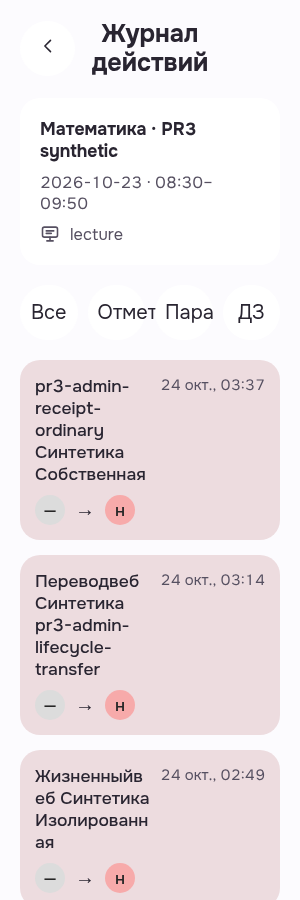
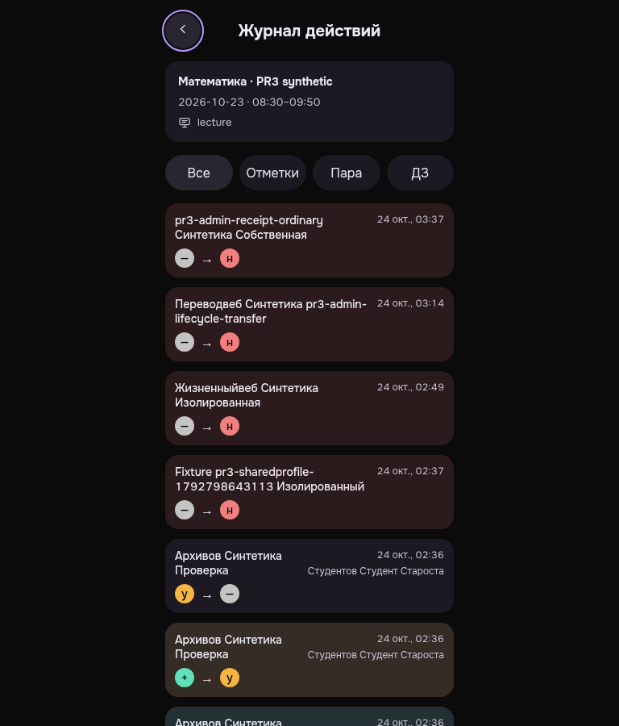

Реальный GET200, 15 событий и возврат через UI подтверждены. При root20 найдены два небольших визуальных пробела; исправленные кадры опубликованы отдельно.
Before presentation: clipping at300light/root20 and raw English lecture. Both findings closed separately on3371; original bytes retained. Only selected viewport rows inspected, not all15 events or every state/width. Technical exact-own DELETE204/sameBearer401; no native logout assertion.
История пары · light · 300 · 20px
Original300light/root20 personally viewed: header/context/date/history transition cards readable, long synthetic names wrap; first viewport shows real populated events. Filter Отметки is partly obscured/clipped by adjacent pill at enlarged narrow width. Lesson kind is raw English lecture, requiring localization.
PWA-MOBILE-HEADMANLESSONACTIONS__MB-HLA-01-real-history-root20__light__300__root20__481512e93
revision 481512e93575070a1f471c65af54df5b4e31cd61
SHA256 7a8e991c8e8d06e010f42a974dd0c9b71caae87685aa10e1c56de65e46af57c9

История пары · dark · 768 · 16px
Original768dark/root16 personally viewed: centered readable history/context and event cards; nativeBack has visible purple keyboardfocus ring. Raw English lecture remains. This viewport shows a subset of15 loaded rows, not an inspection of every row.
PWA-MOBILE-HEADMANLESSONACTIONS__MB-HLA-02-same-real-history-back-keyboard-focus__dark__768__root16__481512e93
revision 481512e93575070a1f471c65af54df5b4e31cd61
SHA256 6bed2a9b0d4d132d66b8cf06f80615b1413dba4c11b84c5ce0786c3a97080044
